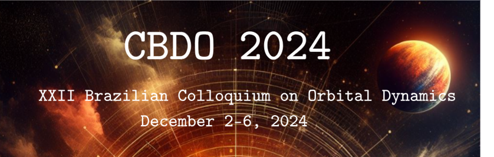

News and Dates
We would like to invite you to attend the XXII Brazilian Colloquium on Orbital Dynamics, CBDO, scheduled for DECEMBER 2 to 6, 2024, at the National Institute for Space Research, INPE, in São José dos Campos (SP) Brazil.
Please note that the date in the previous e-mail (December 6 - 10) has been corrected to December 2 - 6.
Areas:
- Orbital Mechanics and Spacecraft Attitude Determination and Control,
- Dynamical and Planetary Astronomy,
- Dynamical Systems.
Important dates:
-
Submission of provisional abstracts and pre-registration from April 10 to May 31, 2024.
-
Submission of the final version of the abstracts and confirmation of pre-registrations from July 01 to September 30, 2024.
- Announcement of abstract acceptance and the type of presentation by October 10.
- Payment of the registration fee, see table on the website.
For more information contact cbdo2024@gmail.com.
We look forward to meeting you at the CBDO 2024.
INSTRUCTIONS FOR PAYING THE REGISTRATION FEE
For those who need a receipt with CNPJ, payment should be made by deposit to:
- Associação Astronômica Brasileira, SAB.
Bank of Brazil
Agency: 3559-9, CC: 33856-7
Or Pix with the key CNPJ 53.757.191/0001-05
For those who do not need a receipt with CNPJ, payment should be made by deposit to:
- Cristiano Fiorilo de Melo
Bank of Brazil
Agency: 5751-7, Savings Account: 1272-6
PIX with the key (32)984034592
IMPORTANT: REGARDLESS OF THE CHOICE, A PDF COPY OF THE DEPOSIT, PIX OR TRANSFER MUST BE SENT TO cbdo2024@gmail.com
Registration fees (R$), categories and payment deadlines
| Category |
Until Oct. 31 |
November - December |
| Professor/Researcher |
400.00 |
500.00 |
| Postdoctoral |
300.00 |
380.00 |
| Doctoral student |
250.00 |
320.00 |
| Master student |
200.00 |
250.00 |
| Undergraduate student |
50.00 |
75.00 |
The Organising Committee is initiating contacts with the European Physical Journal - Special Topics to publish full articles related to papers presented at the next edition of the CBDO.
The EPJ ST
(https://link.springer.com/journal/11734) is an indexed journal with an impact factor of 2.6 (2023), published by Springer. The EPJ ST publishes topical issues, with articles undergoing a regular peer-review process involving 2 anonymous referees. There are no publication fees.
If you are interested in submitting an article to this special issue, we would like to invite you to complete the following form by 30 September 2024:
click here
The final submission date will be 31 January 2025.
Best wishes,
On behalf of the Organising Committee
Below you can find the list of titles, authors, and affiliations of the abstracts submitted for the CBDO 2024 pre-registration.
This compilation reflects the range of research topics and contributions that will be discussed at this year's conference.
We appreciate the efforts of all participants and look forward to the upcoming event.
Click to view the Abstracts List
Instructions for preparing talks and posters
Talks in English, Portuguese, or Spanish.
Slides in English
Posters in English, MAXIMUM size 84.1 x 118.9 cm (A0 standard).
Preliminary Program
Invited Talks
Ignazio Dimino
CIRA, Centro Italiano Ricerche Aerospaziali
David Nesvorny
Southwest Research Institute, Department of Space Studies, Estados Unidos
Felipe Braga Ribas
Universidade Tecnológica Federal do Paraná, Curitiba (PR), Brasil.
Claudio Vidal Diaz.
Departamento de Matemática, Universidad del Bío-Bío, Chile.
Hauke Hussmann.
German Aerospace Center, Planetary Research Institute, Berlim, Alemanha.
Marcelo Pedro dos Santos.
Departamento de Matemática, Universidade Federal Rural de Pernambuco (PE).
Rafael Sfair de Oliveira.
Universidade Estadual Paulista, Campus Guaratinguetá (SP), Brasil.
Romina Paula Di Sisto.
IALP-CONICET. Fac. de Cs Astronómicas y Geofísicas, UNLP, La Plata, Argentina.
Maria Cecília Zanardi.
Universidade Estadual Paulista, Campus Guaratinguetá (SP), Brasil.
Venue
CBDO 2024 will take place at the "Laboratório de Integração e Testes (LIT)" of the National Institute for Space Research (INPE).
Wagner Sessin Awards
Dear Colleagues,
Winners of the Wagner Sessin Award 2024:
Gustavo Madeira - Postdoctoral Researcher, Institut de Physique de Globe de Paris, IPGP, França - Dynamical and Planetary Astronomy
Rodolfo Batista Negri - Postdoctoral Researcher, UNIFESP - Orbital Mechanics and Control
The deadline for nominating candidates for the Wagner Sessin Awards is June 30, 2024. Please find detailed information at
http://www.astro.iag.usp.br/~dinamica/premiows.htm
The Awards are for young researchers who have demonstrated a strong dedication to scientific or technological research and potential for leadership and have made notable contributions in one of the two selected areas: Orbital Mechanics and Control and Dynamical and Planetary Astronomy.
The scientific-technological contributions are characterized by articles published in indexed scientific journals, full articles published in arbitrated proceedings with strict selection criteria, theses defended, and notable technological contributions resulting from activities carried out mainly in Brazil.
The Awards will be presented at the opening session of CBDO 2024.
Past events
The Brazilian Colloquia on Orbital Dynamics (CBDO) take place every two years, since 1982. The first CBDO, held at ITA in July 1982, was organized at the initiative of Dr. Wagner Sessin, bringing together researchers from the fields of astronomy and orbital dynamics interested in problems of Pure and Applied Celestial Mechanics.
The first CBDO was titled: "Movements of Artificial Satellites: Theory, Determination, and Applications," and 51 researchers and postgraduates from all over Brazil participated. Since then, 20 editions of the CBDO have been held, with 4 of them at the National Institute for Space Research, such as the 2022 edition. Along with an impressive increase in the number of submitted works, the number of participants and the geographical scope of the event have also grown, reflecting the dissemination of works related to Astronomy and Space Activities in our country.
The participation of foreign researchers has been occurring since 1984, and the list of participations can be consulted at http://www.astro.iag.usp.br/~dinamica/historic.htm..
CBDO 2022
Organizing Committe
Comitê Científico
Antônio Fernando Bertachini de Almeida Prado, INPE – Brasil
Eduardo Shirlippe Goes Leandro, UFPE - Brasil
Jorge Alfredo Correa-Otto, CONICET – Argentina
Marcelo Domingos Marchesin, UFMG – Brasil
Nelson Callegari Júnior, UNESP – Brasil
Priscilla Andressa de Souza Silva, UNESP – Brasil
Rogério Deienno, SwRI – Estados Unidos
Rosana Aparecida Nogueira de Araújo, UNESP – Brasil
Sylvio Ferraz-Mello, USP – Brasil
Comitê Local
Cristiano Fiorilo de Melo, UFMG – Brasil
Denílson Paulo Souza dos Santos, UNESP – Brasil
Gabriel Antonio Caritá, INPE – Brasil
Lucas Ruiz dos Santos, UNIFEI – Brasil
Luís Fernando de Osório Mello, UNIFEI – Brasil
Pryscilla Maria Pires dos Santos, UERJ – Brasil
Silvia Maria Giuliatti-Winter, UNESP – Brasil